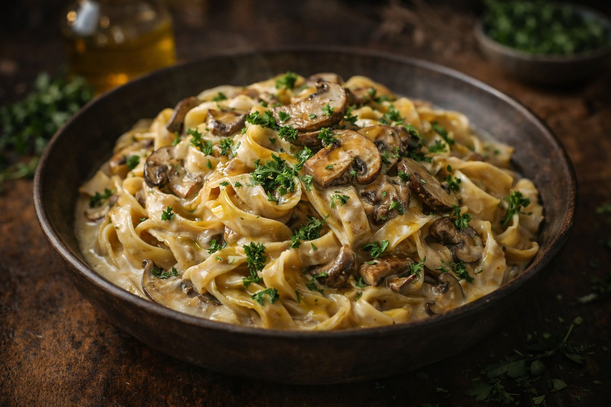

Creamy Mushroom Tagliatelle
Silky ribbons of pasta tossed with a rich porcini mushroom cream sauce, finished with fresh parsley and a whisper of truffle oil. Pure weeknight luxury.

Street-Style Beef Tacos
Tender marinated carne asada, quick-pickled jalapeños, crumbled cotija, smoky chipotle salsa, and a squeeze of lime on warm corn tortillas. Addictive.

Mango Avocado Power Bowl
A vibrant grain bowl with nutty brown rice, tropical mango slices, creamy avocado, edamame, shredded carrots, and a bold sesame-ginger dressing.

Strawberry Basil Cheesecake
Classic New York cheesecake with a buttery graham cracker crust, topped with a luscious strawberry-basil compote. The basil is the secret weapon.

Tonkotsu Ramen from Scratch
A labor of love — rich, milky pork bone broth simmered for 12 hours, topped with chashu pork belly, a soy-marinated soft-boiled egg, nori, and scallions.

Margherita Neapolitan Pizza
Hand-stretched 72-hour cold-fermented dough baked at maximum heat with San Marzano tomatoes, torn fresh mozzarella di bufala, and fragrant basil.

Golden Turmeric Chicken Soup
Anti-inflammatory and deeply comforting — a golden broth infused with fresh turmeric, ginger, garlic, lemon, and shredded chicken with rice noodles.
Salted Caramel Crème Brûlée
Silky vanilla custard with a salted caramel twist, crowned with a perfectly crackly burnt-sugar crust. Sophistication in six ingredients.